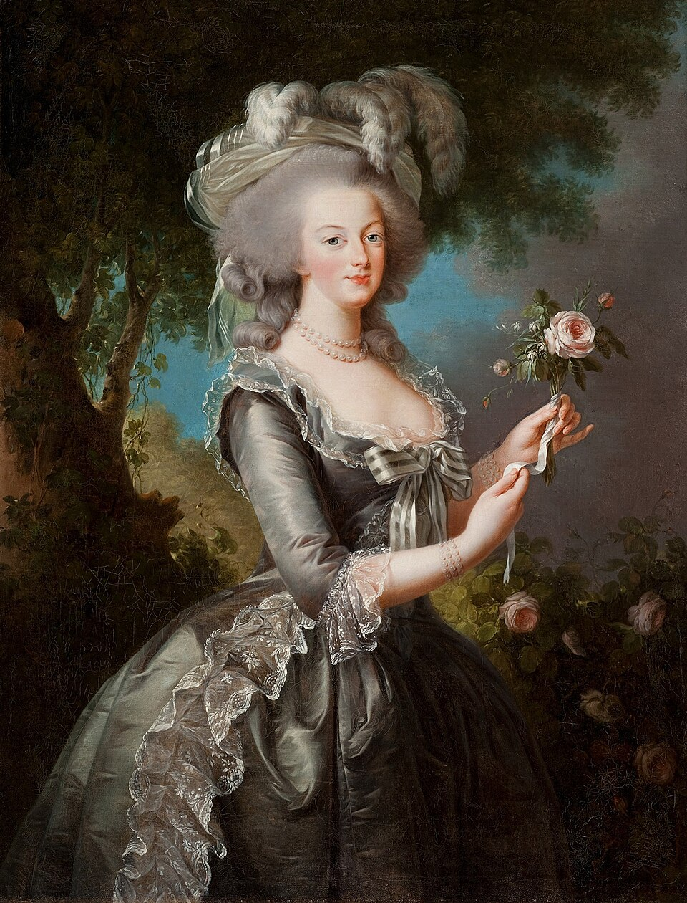
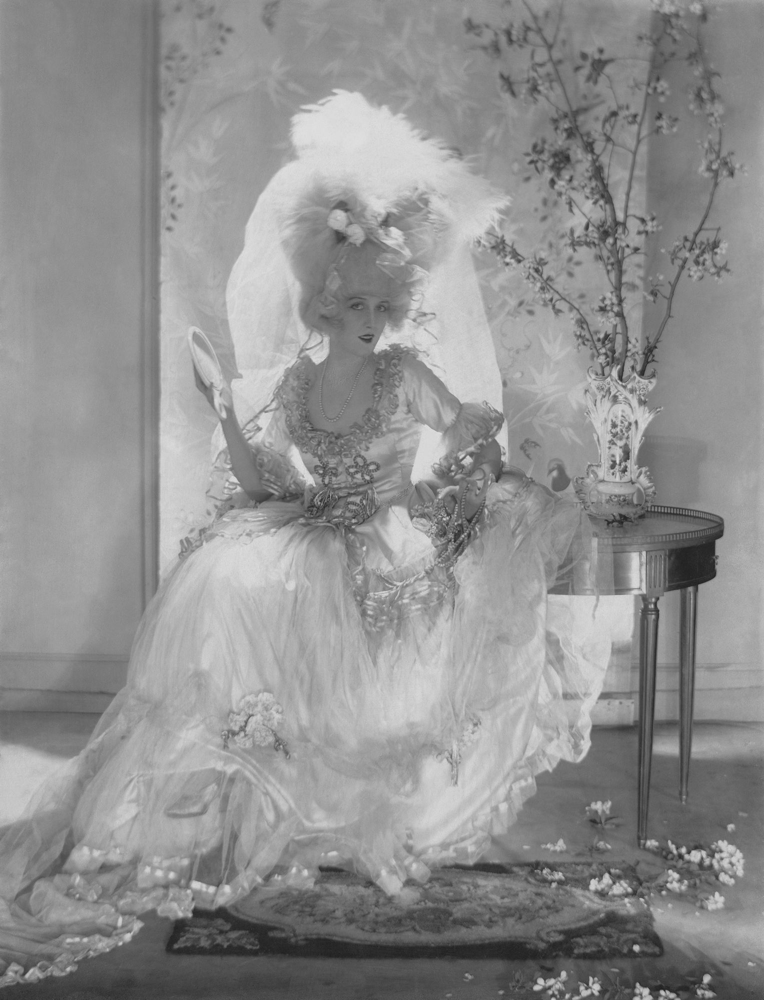
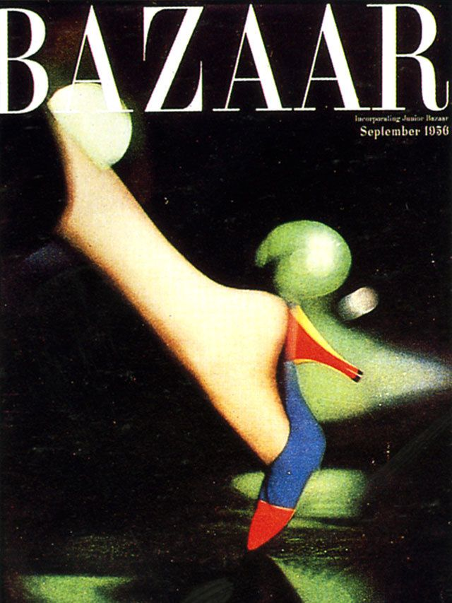
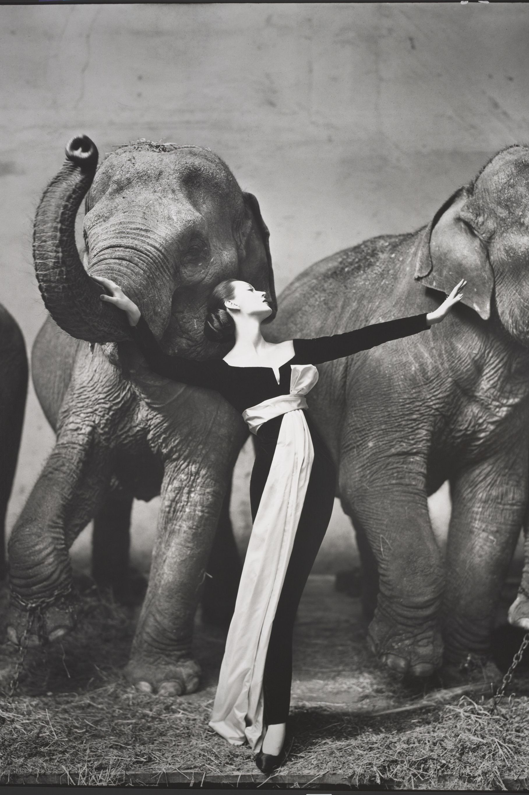

Cronología
Moda y dirección de arte: de la ilustración al entorno digital

Antes de la fotografía:
la imagen de moda
Siglos XVIII–XIX

El nacimiento de la fotografía de moda
1890–1930

Era dorada de las revistas de moda
1930–1950

La narrativa en moda
1960–1979
Dirección de arte y estrategia de marca
1980–2000
La revolución digital
+2000–actualidad